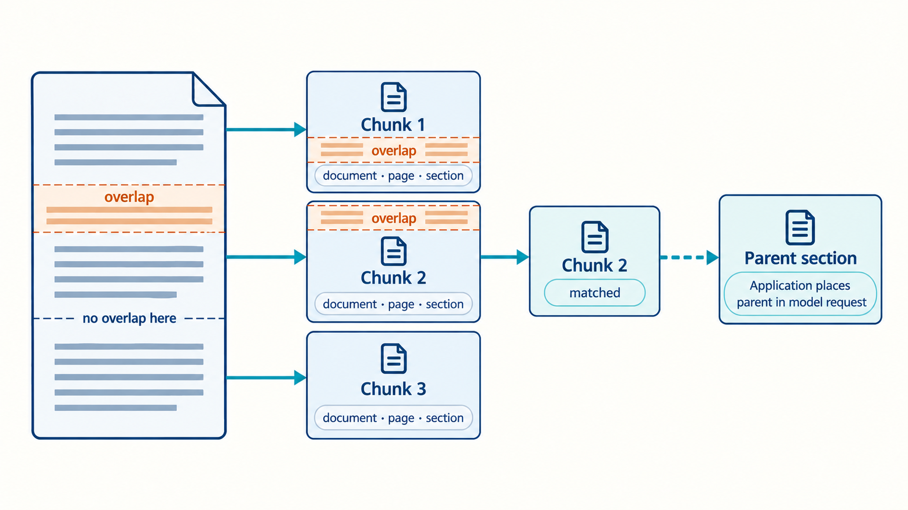
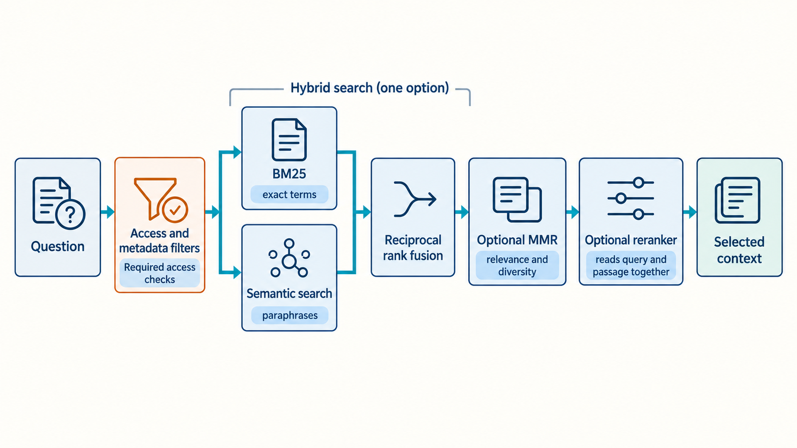

6 RAG: preparing and retrieving external evidence
Chapters 4 and 5 defined how to compare system versions and interpret metrics, benchmarks, model-judge results, and human review. Many product questions still depend on private, detailed, or changing facts that are absent from model weights. A retrieval-augmented generation (RAG) system prepares source documents for search, selects relevant passages for each request, and gives those passages to the model before it generates an answer.
![Eight section cards preserve the current titles. Missing/stale evidence calls for changed supplied evidence; present but misused evidence may call for prompt, model, workflow or training changes. Offline parsing, chunking, embedding and indexing feed online retrieval, not its title. Neutral source-ID tags continue through generation, answer and application support checks. Parsing/source identity and chunk metadata precede schematic vectors q=(0.6,0.8), d1=(0.8,0.6), d2=(3,1), with dot and cosine rankings preserved and not-to-scale qualification. Required access/hard metadata filters precede a one-option BM25/semantic/RRF hybrid group and optional MMR/reranking. The model's insufficient-evidence reply is conditional and prescribed, not guaranteed. FinanceBench returns answer, cited pages and trace.](../assets/fig-m1-c06-f01.png)
The pipeline is split into offline preparation and online retrieval. Records kept at each stage make source identity, chunk quality, ranking, and generation inputs traceable.
6.1 When retrieval is useful
A saved model version contains patterns and knowledge learned during training, but a product often requires current policy guidelines, private customer records, specific financial values, or citable references. Retrieval supplies those facts at request time, while fine-tuning and long-context prompting solve different problems.
RAG retrieves external evidence at request time and places it in the model’s context so the answer can be grounded in those sources.1 It is appropriate when knowledge changes, is private, must be attributable, or is too detailed to expect in weights. The model still generates the language, while the retrieval system selects the evidence.
RAG can lower unsupported-answer risk when relevant evidence is retrieved and the generation step is instructed to use it. Evaluation shows whether it does.
| Method | Changes | Strong fit | Main limitation |
|---|---|---|---|
| Prompting | Current request text | Task framing, output structure, a few supplied facts | Supplied facts must fit the request and be refreshed |
| RAG | Request-time context | Current, private, citable, or large document collections | Retrieval and context failures become new system risks |
| Fine-tuning | Model weights | Behavior, style, task specialization, repeated patterns | Poor fit for frequently changing factual storage |
| Long-context prompting | One large current input | Small document collection or one-off analysis | Cost, latency, attention dilution, and access filtering |
Decision rule
Missing or stale facts require a change to the evidence supplied with the request. If the evidence is present but the model applies the task incorrectly, the remedy may involve the prompt, model, workflow, or training. Corpus size alone does not justify fine-tuning.
6.2 Offline ingestion and online answering
Once retrieval is chosen, parsing, cleaning, and embedding the entire document collection on every request would repeat expensive work. The pipeline separates offline ingestion from online query, retrieval, and generation.
Offline ingestion parses source documents. Before indexing, it splits text into passages and retains structural metadata. At runtime, the online pipeline turns the user request into a search query, retrieves candidate passages, and may rerank them. The application places the selected passages in model context and checks whether the generated claims are supported by evidence.
![Two lanes. Offline ingestion, re-run when sources change or are deleted: source documents, parse, chunk with metadata, embed for vector search, index. An arrow from the index carries candidate chunks and source IDs to the retrieve step of the online lane. Online answering per request: user request, search query, retrieve, optional rerank, the application places passages in context, the model writes an answer with citations, the application checks support. A tag icon marks every card that keeps a source ID, which is every card except the user request and the search query.](../assets/fig-m1-c06-f03.png)
A source can exist in the reference data but be lost during parsing, chunking, embedding, indexing, query formation, filtering, ranking, or context assembly, or be misused during generation. Recording each stage’s inputs and outputs makes each failure measurable.
Locating a failure requires knowing which sources were available, how they were searched, and which source each retrieved chunk came from:
Corpus: The authorized collection of documents or records available to the retrieval system.
Index: A data structure that maps query representations to candidate source units. It may be lexical, vector-based, structured, or hybrid.
Metadata: Source identity and attributes stored with a chunk, such as document, page, section, date, company, permission, or content type.
The two execution paths must preserve complementary evidence and a shared source identity:
- Offline version evidence: parser, chunker, embedding model, index build time, source hashes, and access labels.
- Online request evidence: query text, filters, retrieved identifiers and scores, reranker version, selected context, model output, and citations.
- Data requirement: source identifiers must survive every stage so a generated citation can be checked against an actual retrieved unit.
The separation creates distinct service objectives. Offline quality concerns completeness, reproducibility, freshness, and deletion propagation. Online quality concerns retrieval relevance, authorization, latency, context capacity, and grounded generation.
6.3 Parsing risks and source tracking
The offline phase begins with authorized source files and must produce searchable text together with the document, page, and section where each piece came from. A parser can silently scramble multi-column pages, headers, tables, or right-to-left text, creating retrieval failures before embeddings are involved. Source inspection and layout-aware parsing precede chunking.
Ingestion must preserve page boundaries and document identifiers, along with document layout hierarchies when layout carries meaning. A page loader alone may not recover those hierarchies. PDF text extraction is not equivalent to reading order: visual columns, footnotes, tables, and scanned images can produce interleaved or missing text. Optical Character Recognition (OCR) is required for image-only pages, and a layout-aware parser may be needed to recover the reading order of complex documents.
- Document: In common RAG libraries, a text payload plus metadata. Depending on the loader, it represents a complete file, a single page, a section, or an individual record.
Parsing review
A parsing review compares raw document bytes, extracted text, page images, and structural metadata before chunk creation. It is useful when the reference documents contain scans, multiple columns, tables, headers, footers, or mixed reading directions.
The review compares extracted text with representative rendered pages, measures empty or unusually short pages, and checks that page and section identifiers survive extraction. A retriever cannot return evidence the parser omitted or corrupted.
Limitation: A text-only check cannot detect incorrect reading order or lost diagram meaning.
Preprocessing removes running page headers, navigation artifacts, and boilerplate, but must not remove qualifiers, measurement units, dates, or section headings. Every transformation should be reproducible from the original source and recorded in the index build manifest.
The parsing-review results and parser version become part of the ingestion record. Later retrieval experiments can then distinguish a search failure from evidence already lost during ingestion.
6.4 Chunk boundaries and complete claims
Parsing produces text with source boundaries and reading order. Retrieval rarely returns an entire long document. Instead, it needs units small enough to rank and large enough to preserve meaning. Chunking chooses those units, overlap, and metadata by the structure of the reference data and the questions users ask.
Chunk: The source unit placed in the index and later returned as evidence. Fixed token windows are simple and predictable. Recursive character splitting tries larger separators, such as blank lines, before smaller ones, such as sentence ends or spaces. Structure-aware splitting uses headings, paragraphs, table rows, code functions, or legal clauses. Semantic splitting uses changes in embedding similarity as candidate boundaries.
The chunking figure below contrasts fixed splits with expansion from a matched child chunk to its parent section.

Chunk size determines whether one retrieved unit contains the full answer, irrelevant neighboring text, or only an incomplete fragment. Chen and colleagues2 found that single-claim, or proposition-level, units improved retrieval in their experiments, but the study does not establish one best unit for every corpus. Representative questions can compare sentence, proposition, paragraph, table, figure, section, overlap, and parent-expansion choices.
Overlap copies text around a split into adjacent chunks. It can preserve a crossing claim when the copied text covers the necessary context. Too much overlap increases index size and returns near-duplicates that crowd the context. Parent-child retrieval stores small units for matching but expands a selected child to a larger parent section for generation.
Evidence hit at k (Hit@k) records whether at least one labeled supporting unit appears among the first k retrieved results. The table uses it only as an early diagnostic name. Section 7.2 defines the formula and its limits.
| Chunk decision | Smaller value tends to | Larger value tends to | What to measure |
|---|---|---|---|
| Chunk size | Improve targeting but risk missing context | More context with additional noise and tokens | Evidence hit@k and grounded answer quality |
| Overlap | Reduce duplicates but expose boundary loss | More boundary preservation with duplicated evidence | Tokens duplicated across chunks by overlap; evidence hit@k; index size |
| Top-k retrieval | Lower context cost but miss evidence | Raise recall but increase noise | Recall/hit@k, faithfulness, latency |
| Parent expansion | Compact evidence set | Restore section context | Support completeness and prompt size |
Metadata is part of the chunk
Chunk records should retain document name, page, section path, date, and access attributes beside the text. Private-data retrieval must preserve the attributes needed to enforce access. Trying to reconstruct that information after retrieval is unreliable and can create false citations.
6.5 Retrieval and ranking
Chunks define the evidence units available for ranking. Exact words may differ between a user question and a relevant chunk, so literal matching alone can miss paraphrases. An embedding model maps both to vectors, and a vector index returns nearby candidates under a chosen similarity measure.
Embedding model: A model that maps a text unit to a fixed-dimensional vector used for similarity search. A vector database stores the vectors with chunk text and metadata. At query time, the same embedding model converts the question to a vector and the index performs exact or Approximate Nearest Neighbor (ANN) search. An ANN index, such as a hierarchical navigable small world (HNSW) graph, searches only part of the collection and may miss neighbors that exact search would find.3 Its speed and recall depend on the index and search settings, which belong in the retrieval record.
The index returns candidates that are close under the embedding model, not guaranteed answers. Filters and reranking apply product knowledge the embedding may not encode.
Cosine similarity: A measure based on the angle between a nonzero query vector and a nonzero chunk vector. A zero vector has no direction, and the formula would divide by zero.
\[ \cos(q,d)=\frac{q\cdot d}{\sqrt{\sum_{j=1}^{n}q_j^2}\sqrt{\sum_{j=1}^{n}d_j^2}} \tag{6.1}\]
Here, \(q\) is the query vector, \(d\) is one chunk vector, \(j\) indexes their \(n\) coordinates, and the dot product measures alignment. Each square root is the vector’s Euclidean magnitude, so their product normalizes the score. A larger cosine value means the vectors point in a closer direction under this embedding model. When both vectors are normalized to length one, cosine similarity equals their dot product. It does not prove factual relevance or authorization.
Example: Dot product and cosine rank two chunks differently
Let the query be q = (0.6, 0.8), which has length 1. Candidate d1 = (0.8, 0.6) also has length 1. Candidate d2 = (3, 1) has length √10, about 3.16.
1. q dot d1 = 0.6 × 0.8 + 0.8 × 0.6 = 0.96. Both lengths are 1, so cosine(q, d1) is also 0.96. 2. q dot d2 = 0.6 × 3 + 0.8 × 1 = 2.6. Dividing by the lengths gives cosine(q, d2) = 2.6 / 3.16, about 0.82.
Result: The raw dot product ranks d2 first, 2.6 against 0.96. Cosine similarity ranks d1 first, 0.96 against 0.82.
Interpretation: A dot product depends on both vector length and direction, so an unnormalized vector can rank above a closer match. An index must therefore record whether its vectors are normalized and which distance rule it uses (Section 6.8). The ranking is also valid only within the embedding model’s representation. A lexical identifier or date constraint may still require exact search or metadata filtering.
Embedding selection
Embedding selection considers the language, domain, and unit length represented by document chunks and user queries. It is useful when questions paraphrase relevant text or use conceptual rather than exact matching.
An evaluation compares candidate embedding models on labeled query-evidence pairs, with matching document and query embedding versions within each index. BEIR4 reports large differences across retrieval datasets and supports comparing methods by query and corpus type rather than assuming one family will win. Changing the embedding model changes the ranking space and requires re-embedding every chunk and rebuilding the vector index, because vectors from different models are not comparable.
Limitation: Domain jargon, identifiers, code symbols, and numeric constraints may be represented poorly.
6.6 Staged retrieval pipeline
Vector search returns indexed chunks that are semantically similar to the question. A production question might also depend on exact identifiers, dates, and permissions. One embedding score cannot capture all these requirements. Many production systems combine lexical matching, semantic search, metadata filters, diversity selection, and reranking in a staged pipeline. Combining search methods, selecting for diversity, and reranking are optional choices that need evaluation. Required access permissions and hard query constraints must still be enforced.
- BM25: A lexical retrieval function that rewards exact keyword matches. It gives rarer query terms more weight and common terms less weight, while accounting for term frequency and document length.5
- Semantic search: A retrieval method that finds evidence based on conceptual meaning using embeddings.
- Hybrid retrieval: A method that combines lexical and semantic search results to capture both exact terminology and conceptual paraphrases. It can combine ranks or scores calibrated to a common scale.
BM25 can miss paraphrases. Semantic search can miss exact numbers. Hybrid retrieval combines their candidate lists to cover both cases. BM25 and cosine scores use different scales, so a common fusion method, reciprocal rank fusion (RRF), ignores raw scores. Each candidate receives the sum of \(1/(k + \mathrm{rank})\) over the lists in which it appears. Cormack and colleagues6 used \(k = 60\). This smoothing constant is unrelated to the \(k\) in top-k. Hybrid retrieval is a hypothesis to test, not an automatic improvement. An evaluation compares lexical-only, dense-only, fused, and reranked pipelines by query group, final answer quality, latency, and cost. Nogueira and colleagues7 report reranking gains under their conditions.
After retrieval, the candidate set may need pruning to avoid redundant information.
For example, suppose a passage ranks first in BM25 and third in semantic search. With the RRF constant 60, its combined score is \(1/61 + 1/63\), about 0.03227. A second passage that ranks second in BM25 but is absent from the semantic list receives \(1/62\), about 0.01613. RRF ranks the first passage higher because both lists contribute. These invented ranks illustrate the calculation, not an observed gain in answer quality.
- Maximal Marginal Relevance (MMR): A selection algorithm that balances relevance to the query against similarity to documents already selected for the context window.8 It favors relevant results that add information. Exact duplicate removal is a separate check.
Reranker: A second-stage scorer that examines the query and each surviving candidate together. An embedding model encodes the query and each chunk separately, so chunk vectors can be computed before any question arrives. A reranker, often a cross-encoder, reads the query and one candidate together. This can improve ranking, but the gain needs evaluation. Joint scoring runs for every candidate at request time, adding latency, so it usually processes only the short list that earlier stages return.
For the question, “What was Acme’s FY2024 free cash flow?” a table row containing FY2024 may rank first under BM25. A prose summary saying “cash generation improved” may rank higher in semantic search. Hybrid retrieval keeps both. MMR helps the system select the table row and a distinct explanatory passage, rather than two copies of the same row. A reranker then places the passage it scores as most relevant first. The resulting trace shows why each passage was kept or moved.
Metadata filters should apply authorization, document date, company, language, or content type before context reaches the model.
The staged-retrieval figure below shows one hybrid configuration, with required access checks before its optional retrieval refinements.

Retrieval failures at different stages require different repairs. Increasing top-k cannot recover a document that was never parsed or indexed, and a better model cannot use evidence the retriever omitted.
The online stages run in this order, and the fix for a failure belongs at the stage where it occurs:
- Normalize or rewrite the user question only when the rewrite preserves constraints and named entities.
- Apply authorization and hard metadata filters.
- Run lexical, semantic, structured, or hybrid candidate search appropriate to the query.
- Deduplicate and diversify candidates where repeated chunks consume the result set.
- Rerank the reduced candidate pool with a stronger query-document scorer when latency permits.
- Select context according to evidence coverage and token budget, preserving source identifiers.
Retrieval score semantics
Vector distance, cosine similarity, BM25 score, and reranker score are not interchangeable probabilities. Each trace records the score type and model or index version so the ranking can be interpreted.
6.7 Answering from retrieved evidence
Search and reranking have selected a small, authorized set of passages that the application may give to the model. The model can still ignore, misread, or overgeneralize that evidence while producing fluent prose. A grounded generation specification states which evidence the answer may use, the citation format, missing-evidence behavior, and post-generation checks.
The generation prompt labels evidence blocks with stable source identifiers, instructs the model to cite factual claims, and allows explicit insufficient-evidence declarations. The output payload contains the generated text, cited identifiers, and an escalation flag. Application validation checks that every cited identifier belongs to the evidence supplied to the model.
A citation should identify both the document and page, or use a stable chunk ID. A page number alone is ambiguous when two documents have the same page number. Membership validation can reject an invented identifier, but it cannot prove that the cited passage supports the claim. ALCE9 scores citation quality apart from answer correctness. Its citation recall checks whether each generated statement is fully supported by the passages it cites, so an uncited statement fails. Its citation precision checks whether each citation contributes support for the statement. A grounded application should therefore check whether each important claim follows from its cited span and whether important claims have citations.
Failure analysis follows the supporting passage through the pipeline. If it is absent from the source collection, the collection lacks coverage. If the source contains it but the searchable index does not, parsing, chunking, or indexing lost it. If the index contains it but retrieval omits it, search or filtering needs inspection. If it was retrieved but omitted from the final request, selection or context assembly failed. When the necessary evidence is included in the model request, the review can test how the model interpreted and used it.
Even a relevant passage can lead to an incorrect or unsupported answer:
- Unsupported synthesis: the answer combines claims not stated by any selected source.
- Citation mismatch: an identifier is valid but the cited chunk does not support the attached sentence.
- Conflict suppression: the model chooses one of two conflicting documents without reporting the conflict.
- Instruction injection: retrieved text contains instructions that attempt to override application policy. Content can be authorized for the user to read while remaining untrusted as an instruction to the application. OWASP10 describes direct and indirect prompt injection, including instructions carried through external files and web pages.
- Answer drift: the answer addresses a related topic but not the user’s question.
Grounded generation
The generation request contains the question, identified evidence passages, and the required answer fields. The returned citations allow claims to be checked against those passages. This is useful when answers must be current, auditable, or limited to an authorized knowledge base.
The prompt identifies retrieved text as data and requests citations. Software must still enforce access permissions and check proposed actions. Two further checks ask whether the answer stays within the evidence and whether it answers the question. Chapter 7 defines citation support, faithfulness, and answer relevance.
Limitation: The model can still misunderstand a source, and the reference data itself may be incomplete or wrong. RAGTruth11 documents unsupported and contradictory claims in evaluated RAG outputs. Retrieved passages and valid citation identifiers alone do not establish that an answer is supported.
6.8 FinanceBench RAG: from documents to answers
The RAG design identifies the component responsible for each stage and records its inputs and outputs. A financial-question answering example turns that architecture into executable stages and row-level records that can be evaluated later. This section builds ingestion and the online answering function. Chapter 7 continues the same example with the no-retrieval baseline, evaluation, and one controlled improvement.
The example uses questions and financial documents from FinanceBench12. Chapter 7’s no-retrieval run establishes the baseline. The ingestion pipeline parses PDF pages with metadata attributes, splits text with RecursiveCharacterTextSplitter, and embeds chunks into a FAISS index. These are LangChain interfaces for PDF loading, text splitting, embeddings, and vector search. The online path retrieves evidence and returns both the answer and its trace. Here, answer_with_rag is the application function that performs that online path. Comparison separates answer correctness, faithfulness, and evidence-page hit.
Code example: The ingestion path preserves page identity before splitting.
from langchain_community.document_loaders import PyPDFLoader
from langchain_text_splitters import RecursiveCharacterTextSplitter
from langchain_huggingface import HuggingFaceEmbeddings
from langchain_community.vectorstores import FAISS
pages = []
for pdf_path in financial_pdfs:
for page in PyPDFLoader(str(pdf_path)).load():
page.metadata.update({
"doc_name": pdf_path.name,
"company": infer_company(pdf_path),
"doc_period": infer_period(pdf_path),
"source_page": page.metadata["page"] + 1,
})
pages.append(page)
splitter = RecursiveCharacterTextSplitter(
chunk_size=1000,
chunk_overlap=150,
)
chunks = splitter.split_documents(pages)
embedding_model = HuggingFaceEmbeddings(
model_name="BAAI/bge-small-en-v1.5",
)
index = FAISS.from_documents(chunks, embedding_model)
index.save_local("financebench_faiss")page is the source evidence unit, chunks inherit its metadata, and index stores search records.1314 The splitter uses Python’s len() by default: chunk_size=1000 counts characters, and chunk_overlap=150 requests up to 150 characters of overlap. Neither value counts model tokens. The embedding and generation inputs still need checks against their own token limits.15 The selected BAAI/bge-small-en-v1.5 model produces 384-value vectors. The listing does not request unit normalization, so the index record must preserve its distance rule rather than assuming that a returned distance is a cosine score. If vectors are normalized to length one, cosine similarity equals their dot product. LangChain’s default FAISS index uses exact squared Euclidean distance, where lower means closer. For vectors normalized to length one, this distance equals \(2 - 2\cos(q,d)\), so it gives the same ranking as cosine similarity. The source_page field is converted to the one-based page number used by evaluation labels. The listing does not write a separate build record. A reproducible ingestion run saves, beside the index, a record with source hashes, parser and splitter versions, metadata schema, embedding identifier, normalization setting, distance rule, and FAISS settings. The binary index alone cannot reproduce the preparation process.
This short ingestion example assumes financial_pdfs is a collection of pathlib.Path objects for PDF files and that infer_company and infer_period return metadata from an approved source. Its expected result is an index whose chunks retain doc_name and a one-based source_page. The loader’s zero-based page value is never used as the display page. The listing retains document and page identity, company, and period. It records no section path, because the loader returns pages, and no access attributes, because the example indexes public documents.
This short online example depends on four application components: index returns candidate documents, bge_reranker returns (document, score) pairs, render_grounded_prompt formats the question and selected evidence without dropping or changing those passages, and generation_model returns an object with .text and .cited_pages. Their versions and interfaces belong in the run record. The function retains the rendered request as model_request, allowing an error review to check what it submitted rather than infer that from the selected chunks.
The index contains public FinanceBench documents. This example does not implement per-user access filtering. A private-data deployment needs access filters in search and must exclude unauthorized passages from the model request. The function retrieves up to 12 candidates and keeps at most k after reranking, so it accepts integer values from 1 to 12.
Code example: The online function returns answer evidence and trace objects, not prose alone.
def answer_with_rag(question, *, k=5):
if type(k) is not int or not 1 <= k <= 12:
raise ValueError("k must be an integer from 1 to 12")
retrieved = index.similarity_search_with_score(question, k=12)
candidates = [
{
"citation_id": f"{doc.metadata['doc_name']}#p{doc.metadata['source_page']}",
"faiss_distance": float(distance),
}
for doc, distance in retrieved
]
reranked = bge_reranker.rerank(
question,
[doc for doc, _ in retrieved],
)[:k]
context = [
{
"chunk_text": doc.page_content,
"doc_name": doc.metadata["doc_name"],
"source_page": doc.metadata["source_page"],
"citation_id": f"{doc.metadata['doc_name']}#p{doc.metadata['source_page']}",
"reranker_score": score,
}
for doc, score in reranked
]
if not context:
return {
"question": question, "answer": None, "cited_pages": [],
"candidates": candidates, "retrieved": [],
"model_request": None, "k": k,
"status": "insufficient_evidence",
}
model_request = render_grounded_prompt(question=question, evidence=context)
answer = generation_model(model_request)
allowed_citations = {item["citation_id"] for item in context}
cited_pages = list(answer.cited_pages)
if not set(cited_pages) <= allowed_citations:
raise ValueError("Answer cited evidence outside the supplied context")
return {
"question": question,
"answer": answer.text,
"cited_pages": cited_pages,
"candidates": candidates,
"retrieved": context,
"model_request": model_request,
"k": k,
"status": "answered",
}On a successful retrieval the function returns the question, answer, cited pages, up to 12 search candidates with their FAISS distances, selected records, rendered request, k, and an answered status. With no selected records it returns the same trace fields, with answer and model_request set to None, cited_pages and retrieved empty, and status insufficient_evidence, without calling the generation model. The candidates list still records any search results when reranking selects nothing. Unknown citation IDs raise ValueError. The trace distinguishes a missed labeled page (absent from candidates) from a candidate excluded before generation (present in candidates but absent from retrieved). Exclusion is a context-selection failure when the omitted candidate contains evidence required for the answer. Comparing the answer with passages in model_request then checks whether generation used the supplied evidence. The baseline and RAG outputs should share question identifiers so a row-level comparison remains possible. Chapter 12 reuses this interface rather than defining a second version of answer_with_rag.
This short function has no escalation flag and does not detect a model’s insufficient-evidence reply. Such a reply, or an answer that cites nothing, returns status answered. With a nonempty index, nearest-neighbor search returns chunks even when they do not answer the question. Here insufficient_evidence means that no context was selected, not that a relevance or claim-support check passed. A production version adds a declared escalation field and checks that factual claims carry supporting citations. If citation validation or a helper fails, the function raises before returning its trace. A runner that needs the failed row must retain partial request and response records as those stages run.
Chapter conclusion
A complete RAG build records where each retrieved passage came from and returns a trace beside the answer. Chapter 7 defines the component metrics and experiments that show whether the pipeline improved.
Lewis, P., Perez, E., Piktus, A., Petroni, F., Karpukhin, V., Goyal, N., Küttler, H., Lewis, M., Yih, W., Rocktäschel, T., Riedel, S., & Kiela, D. (2020). Retrieval-augmented generation for knowledge-intensive NLP tasks. In Advances in Neural Information Processing Systems 33. https://arxiv.org/abs/2005.11401. The paper combines parametric generation with retrieved non-parametric memory. It supports the mechanism, not every product control described in this chapter.↩︎
Chen, T., Wang, H., Chen, S., Yu, W., Ma, K., Zhao, X., Zhang, H., & Yu, D. (2024). Dense X retrieval: What retrieval granularity should we use? In Proceedings of the 2024 Conference on Empirical Methods in Natural Language Processing (pp. 15159–15177). Association for Computational Linguistics. https://aclanthology.org/2024.emnlp-main.845/. The experiments compare several retrieval units and report better results for propositions than passages under the tested settings. They do not establish one best unit or overlap setting for every corpus.↩︎
Malkov, Y. A., & Yashunin, D. A. (2020). Efficient and robust approximate nearest neighbor search using hierarchical navigable small world graphs. IEEE Transactions on Pattern Analysis and Machine Intelligence, 42(4), 824–836. https://doi.org/10.1109/TPAMI.2018.2889473. The paper introduces HNSW graphs and reports their recall and speed trade-offs. Index parameters still need tuning for each corpus.↩︎
Thakur, N., Reimers, N., Rücklé, A., Srivastava, A., & Gurevych, I. (2021). BEIR: A heterogeneous benchmark for zero-shot evaluation of information retrieval models. In Advances in Neural Information Processing Systems 34. https://arxiv.org/abs/2104.08663. BEIR reports substantial variation among methods and datasets. It does not predict which retriever will work best on a new private corpus.↩︎
Robertson, S., & Zaragoza, H. (2009). The probabilistic relevance framework: BM25 and beyond. Foundations and Trends in Information Retrieval, 3(4), 333–389. https://doi.org/10.1561/1500000019. The review explains BM25’s inverse-document-frequency weighting, term-frequency saturation, and length normalization. Local tuning and corpus behavior still need evaluation.↩︎
Cormack, G. V., Clarke, C. L. A., & Büttcher, S. (2009). Reciprocal rank fusion outperforms Condorcet and individual rank learning methods. In Proceedings of the 32nd International ACM SIGIR Conference on Research and Development in Information Retrieval (pp. 758–759). ACM. https://doi.org/10.1145/1571941.1572114. The paper defines Reciprocal Rank Fusion and reports gains over the methods compared there. The study does not guarantee better end-to-end RAG answers.↩︎
Nogueira, R., Jiang, Z., Pradeep, R., & Lin, J. (2020). Document ranking with a pretrained sequence-to-sequence model. In Findings of the Association for Computational Linguistics: EMNLP 2020 (pp. 708–718). Association for Computational Linguistics. https://doi.org/10.18653/v1/2020.findings-emnlp.63. The paper scores query-document pairs and reranks candidates, with improvements on its evaluation tasks. Those results do not remove the added inference cost or guarantee gains on a new corpus.↩︎
Carbonell, J., & Goldstein, J. (1998). The use of MMR, diversity-based reranking for reordering documents and producing summaries. In Proceedings of the 21st Annual International ACM SIGIR Conference on Research and Development in Information Retrieval (pp. 335–336). ACM. https://doi.org/10.1145/290941.291025. The paper defines Maximal Marginal Relevance as a trade-off between relevance and novelty.↩︎
Gao, T., Yen, H., Yu, J., & Chen, D. (2023). Enabling large language models to generate text with citations. In Proceedings of the 2023 Conference on Empirical Methods in Natural Language Processing (pp. 6465–6488). Association for Computational Linguistics. https://doi.org/10.18653/v1/2023.emnlp-main.398. ALCE measures citation recall and citation precision separately from fluency and answer correctness. It does not establish the chapter’s stable chunk-identifier rule or replace domain review for high-impact claims.↩︎
OWASP Gen AI Security Project. (2025). LLM01:2025 prompt injection. https://genai.owasp.org/llmrisk/llm01-prompt-injection/. The guidance distinguishes direct and indirect prompt injection and lists external content as a carrier. It is security guidance, not evidence that one mitigation is complete.↩︎
Niu, C., Wu, Y., Zhu, J., Xu, S., Shum, K., Zhong, R., Song, J., & Zhang, T. (2024). RAGTruth: A hallucination corpus for developing trustworthy retrieval-augmented language models. In Proceedings of the 62nd Annual Meeting of the Association for Computational Linguistics, Volume 1: Long Papers (pp. 10862–10878). Association for Computational Linguistics. https://doi.org/10.18653/v1/2024.acl-long.585. The corpus contains unsupported and contradictory claims from evaluated RAG outputs. It shows residual grounding failures, not that every retrieved answer is unreliable.↩︎
Islam, P., Kannappan, A., Kiela, D., Qian, R., Scherrer, N., & Vidgen, B. (2023). FinanceBench: A new benchmark for financial question answering. arXiv. https://arxiv.org/abs/2311.11944. The paper introduces a financial question-answering benchmark over public-company documents with evidence. It does not validate this chapter’s local implementation.↩︎
Xiao, S., Liu, Z., Zhang, P., Muennighoff, N., Lian, D., & Nie, J.-Y. (2023). C-Pack: Packaged resources to advance general Chinese embedding. arXiv. https://arxiv.org/abs/2309.07597. The source documents the BGE model family and reported embedding and reranking results. The rule to rebuild an index after changing its embedding model follows from index construction, not from the paper alone.↩︎
Meta AI. (2026). Faiss 1.15.0 [Software documentation]. https://github.com/facebookresearch/faiss/tree/v1.15.0. The versioned documentation describes similarity search and clustering of dense vectors. It supports the library capability, not the chapter’s reproducibility rules. ↩︎
LangChain AI. (n.d.). Splitting recursively. Retrieved September 27, 2026, from https://docs.langchain.com/oss/python/integrations/splitters/recursive_text_splitter. The official documentation measures chunk size by the selected length function and describes overlap as a target. Its example uses
len, which counts characters rather than model tokens.↩︎